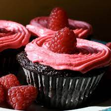

Raspberry Cup Cakes

This the picture of the final product
Like mini no-bake cheesecakes. A delightful favorite with everyone, especially appetizing during the summer months. Note - Frozen raspberries can also be used. When thawed, drain some of liquid and use in the raspberry puree.
Ingredients
- 3/4 cup graham cracker crumbs
- 1/4 cup chopped pecans
- 3 tablespoons butter, melted
- 3/4 cup fresh raspberries, crushed
- 1/2 (8 ounce) package cream cheese
- 10 1/2 fluid ounces sweetened condensed milk
- 1 cup frozen whipped topping, thawed
Steps
- Line a 12 cup muffin pan with paper cup liners. In a medium bowl, combine graham cracker crumbs, crushed pecans and melted margarine, mixing well to blend. Spoon mixture evenly into a 12 cup muffin pan lined with paper cup liners. Press mixture with a spoon to firm bottom. Puree raspberries and set aside.
- Beat cream cheese until fluffy. Add condensed milk and 1/2 cup of the raspberry puree and mix until well blended. Fold in whipped topping.
- Spoon evenly into baking cups. Freeze for at least 5 hours. When ready to serve, remove paper liners. Invert cakes onto individual serving plates. Drizzle remaining raspberry puree over cakes. Garnish with a few whole raspberries. Serve frozen.
Back home